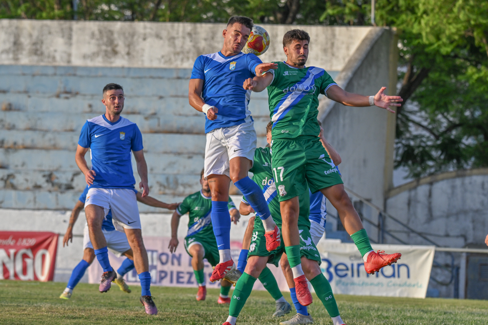
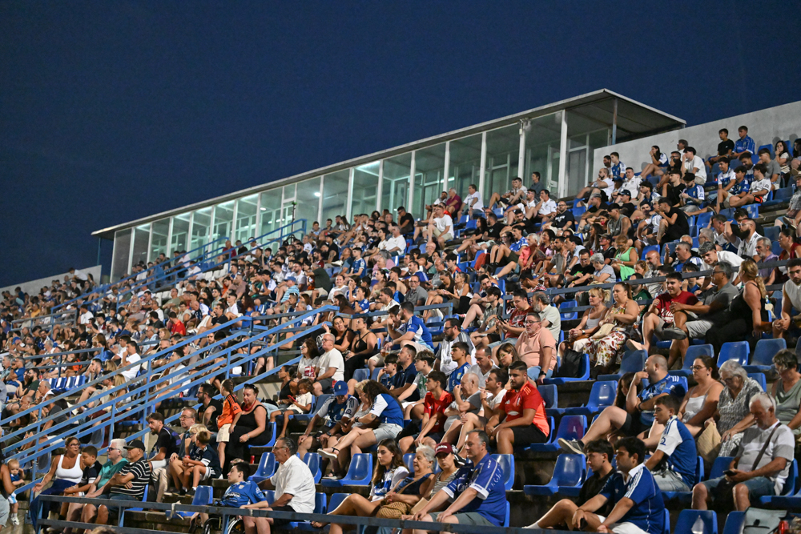

El Xerez CD golea en el Trofeo Pedro Garrido en el primer partido de pretemporada
El Xerez CD goleó 0-7 al Jerez Industrial en la sexta edición del Trofeo Pedro Garrido, primer amistoso de la pretemporada dirigida por Xavi Molist, con tantos de Rober Sánchez, Mario Peregrina, Isuskiza, Óscar Lorenzo, Rubén Mesa, Óscar Ganfornina e Isma.
El conjunto azulino se llevó por goleada la sexta edición del Trofeo Pedro Garrido, certamen organizado por el Jerez Industrial, en el estreno de la pretemporada para el equipo que dirige Xavi Molist. El entrenador, con varias ausencias notables en su plantilla, distribuyó el protagonismo entre todos sus jugadores planteando dos bloques distintos y ensayó dos esquemas tácticos: un 3-5-2 con vocación ofensiva durante los primeros 45 minutos y un 4-2-3-1 más convencional tras el descanso.
Para el arranque del choque, Molist alineó a Marcos Alconchel en la portería, una zaga de tres hombres en fase de ataque compuesta por Guille Campos, Josete y Manu Rosado, con Jaime Fernández y Chacartegui recorriendo los costados. Raúl López ejerció de cerebro del equipo, acompañado por Bittor Isuskiza en tareas de construcción; Zequi y Mario Peregrina se movieron por el interior, mientras Rubén Sánchez ocupó la punta de ataque.
Doblete relámpago en los primeros minutos
Apenas iniciado el encuentro, el Xerez se adelantó en el marcador gracias a una diana del canterano Rober Sánchez, quien remató sin oposición un centro llegado desde la izquierda por parte de Chacartegui. El segundo tanto llegó poco después, obra de Mario Peregrina, que conectó de cabeza un centro de Rober tras una jugada iniciada por Zequi. El propio jugador de Sanlúcar estuvo cerca de firmar el tercero con un disparo desde el borde del área, pero Portela evitó el gol con una gran estirada que envió el balón a saque de esquina.

Foto: PuroXerecismoCon dominio absoluto del Xerez CD, Molist insistía a sus futbolistas en la necesidad de moverse con velocidad, circular rápido el balón y priorizar el toque a dos frente a un rival que ya acusaba el desgaste acumulado en su primera semana de trabajo veraniego. Portela volvió a lucirse, esta vez repeliendo con la cara un remate a bocajarro de Josete tras un córner, en una nueva ocasión clara para ampliar la ventaja en aquella calurosa tarde-noche del uno de agosto.
Tras el parón para hidratarse, llegó el tercer gol azulino, obra de Bittor Isuskiza. Mario Peregrina se asoció en el centro del campo rompiendo líneas rivales, cedió a Zequi, y este, tras un regate con sombrero a un defensor, dejó el balón servido al mediapunta para que empujara a portería vacía el 0-3, tanto que arrancó una gran ovación.
Segunda mitad con equipo renovado
Para el segundo tiempo, Molist introdujo cambios generalizados: Fali se incorporó al eje de la defensa junto a Manu Galán, con David Lachica y Óscar Gallardo por las bandas; Isma y Óscar Ganfornina se hicieron cargo del centro del campo; una línea de tres integrada por Zelu, Óscar Lorenzo y Jaime López, y Rubén Mesa como referencia ofensiva.
Nada más reanudarse el juego, Óscar Lorenzo sorprendió al guardameta local con un centro-chut que se coló en la portería. Poco después, Rubén Mesa aprovechó un rechace del portero para anotar el quinto tanto de la noche. Jaime López desperdició la ocasión de poner el sexto tras una gran jugada de Zelu, enviando el balón fuera.
El sexto gol llegó finalmente por medio del canterano Óscar Ganfornina, con un disparo lejano que dejó sin opciones al meta local. David Lachica también dispuso de su oportunidad tras un pase de Zelu, aunque el portero industrialista respondió con una buena parada. Con el transcurso de los minutos el ritmo del partido bajó considerablemente, aunque el Xerez logró maquillar el resultado con un séptimo gol de penalti, transformado por Isma, tras una falta cometida sobre Ahmed, jugador que se encontraba a prueba con el equipo.
Ficha del partido
Jerez Industrial: Carlos Portela, Manu Jiménez, Daviti, Joselito, Juanjo, Chicho, Manu Rojas, Benítez, Salvi, Mochón y Juanjo Chamorro. También jugaron Andrés, Luis, Dani Castro, Pedro, Alberto, Germán, Jorge, Raúl, Javi Romero, Saúl y Beato.
Xerez CD: Marcos Alconchel, Manu Rosado, Guille Campos, Josete, Chacartegui, Raúl López, Isuskiza (Ahmed, min. 35), Jaime Fernández, Zequi Díaz, Mario Peregrina y Rober Sánchez. En la reanudación entraron Carlos Pantoja, Óscar Gallardo, Fali, Manu Galán, David Lachica, Isma, Óscar Ganfornina, Óscar Lorenzo, Zelu, Jaime López y Rubén Mesa.
Goles: 0-1 (min. 1) Rober Sánchez. 0-2 (min. 6) Mario Peregrina. 0-3 (min. 34) Isuskiza. 0-4 (min. 48) Óscar Lorenzo. 0-5 (min. 49) Rubén Mesa. 0-6 (min. 63) Óscar Ganfornina. 0-7 (min. 84) Isma, de penalti.

Foto: PuroXerecismoÁrbitra: Patricia Luna Varo.
Incidencias: Encuentro correspondiente a la sexta edición del Trofeo Pedro Garrido, celebrado en el estadio homónimo, cuyo césped presentaba un estado deficiente. Se registró una buena entrada de público en las gradas. Antes del inicio se guardó un minuto de silencio en recuerdo de Borja Ferrer.
← Volver a la portada